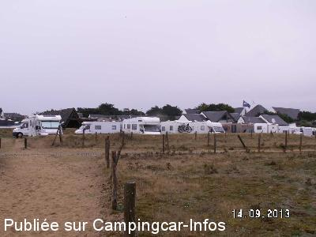
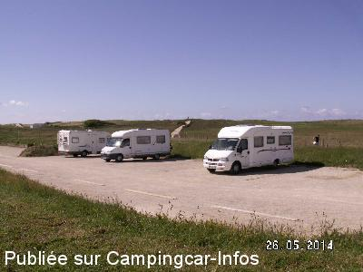
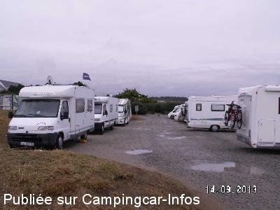
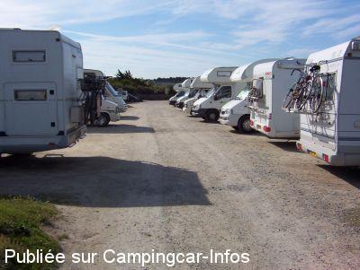
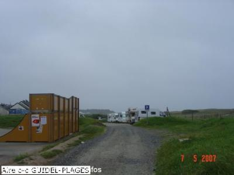

APCC = parkings réservés camping-cars sans services de :
GUIDEL
(N° 363)
Accès/adresse :
Accès D152
Aire La Falaise
56520 GUIDEL
Aire La Falaise
56520 GUIDEL
Latitude : (Nord) 47.76654° Décimaux ou 47° 45′ 59′′
Longitude : (Ouest) -3.5257° Décimaux ou -3° 31′ 32′′
Tarif : Gratuit
Services :
Autres informations :
Ouvert toute l'année
7 emplacements délimités au sol
Stationnement limité 24 h
http://www.lorientbretagnesudtourisme.fr/pays-de-lorient-pratique/aires-camping-cars.cfm

Le 23/08/2014 par Gilles

Le 23/08/2014 par Gilles

Le 23/08/2014 par Gilles

Le 12/09/2007 par giloulin

Le 08/05/2007 par christianbrieuc
de
Christine
le 06/03/2016 :
Si vous voulez passer une nuit tranquille, je vous la recommande. Nous y avons passé 1 nuit début mars. A cette époque, il y a de la place. Petite ballade sur la plage et possibilité de faire de la randonnée au bord de la rivière nommée La Laïta.
Si vous voulez passer une nuit tranquille, je vous la recommande. Nous y avons passé 1 nuit début mars. A cette époque, il y a de la place. Petite ballade sur la plage et possibilité de faire de la randonnée au bord de la rivière nommée La Laïta.
de
Hymer79
le 05/06/2014 :
Nous y sommes passés fin mai, les places sont maintenant matérialisées au sol MAIS le nombre a diminué.
Nous y sommes passés fin mai, les places sont maintenant matérialisées au sol MAIS le nombre a diminué.
de
manimal99
le 01/05/2009 :
Nous y avons passé le week-end... Les surfeurs sont chez eux.
Nous y avons passé le week-end... Les surfeurs sont chez eux.
de
la_famille_escargot_36
le 15/08/2008 :
De passage début août. Donc, ce soir là plus de place ... Mais bonne nouvelle : il y a un parking face à la mer, il est situé 800 m à gauche en sortant de l'aire. La municipalité est OK. Nous avons la visite de la police municipale tous les matins pour vérifier que l'on n'abuse pas des 48 heures de stationnement permis.
De passage début août. Donc, ce soir là plus de place ... Mais bonne nouvelle : il y a un parking face à la mer, il est situé 800 m à gauche en sortant de l'aire. La municipalité est OK. Nous avons la visite de la police municipale tous les matins pour vérifier que l'on n'abuse pas des 48 heures de stationnement permis.
de
Christian BRIEUC
le 08/05/2007 :
Nous venons d'y passer la nuit du 7 au 8 mai...Présence de 8 camping-cars. N'avons rencontré aucune difficulté en cette saison....mais cela ne doit pas être la même chose en été....
Nous venons d'y passer la nuit du 7 au 8 mai...Présence de 8 camping-cars. N'avons rencontré aucune difficulté en cette saison....mais cela ne doit pas être la même chose en été....